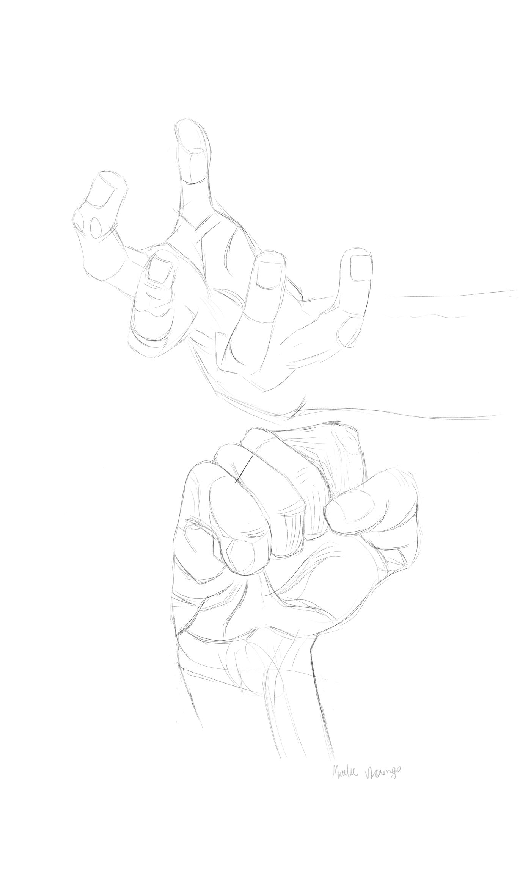
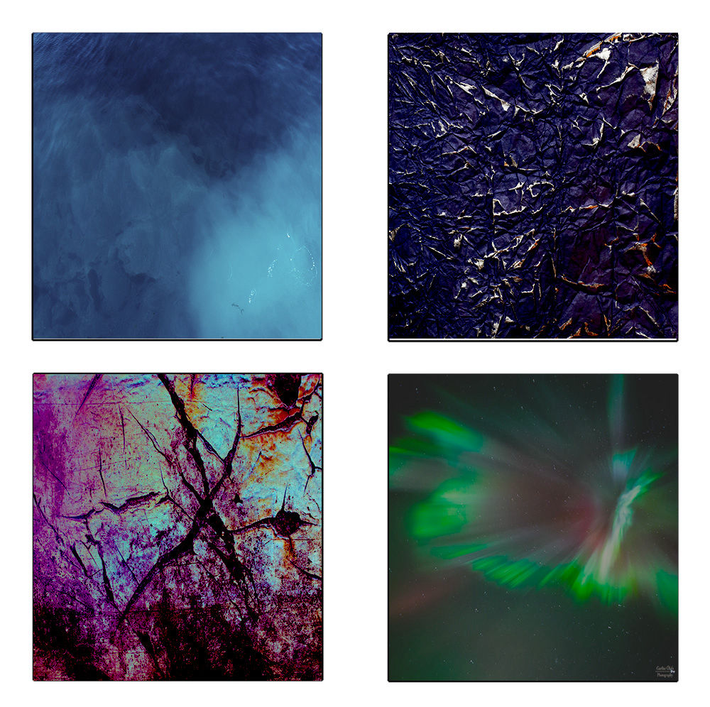

Hey, I'm a 16 year old from Michigan, and I'm currently in my junior year of high school. I also attend LCC to study Digital Media and Design for half of my day. I have a huge passion for art and graphic/visual design, and I hope to get a degree in it at Michigan State University.
best-of gallery
minimalism
I created this project to show how clean, uncluttered design can get your point across more, while also looking pretty.
skelly
project I created when I first played with illustrator.
hand study
I did this to practice drawing realistically and proportionately, since I have trouble drawing hands.

102 2d design gallery
rhythm designs
project created to show how you can edit an image to create rhythm and a sense of texture and contrast.

space depth
This was a project I did in photoshop to practice creating linear depth with only simple images.
value
This project was done to show how messing with colors/effects in an image can completely change the mood.
171 photoshop gallery
protest poster
I made this in photoshop as a peaceful protest sign for women's rights, and I used a minimalistic style
personality poster
I created this to describe my personality type, and it helped me learn how layout can effect overall design in a poster
random
just a crazy collage featuring a rabbit on the moon


follow me!